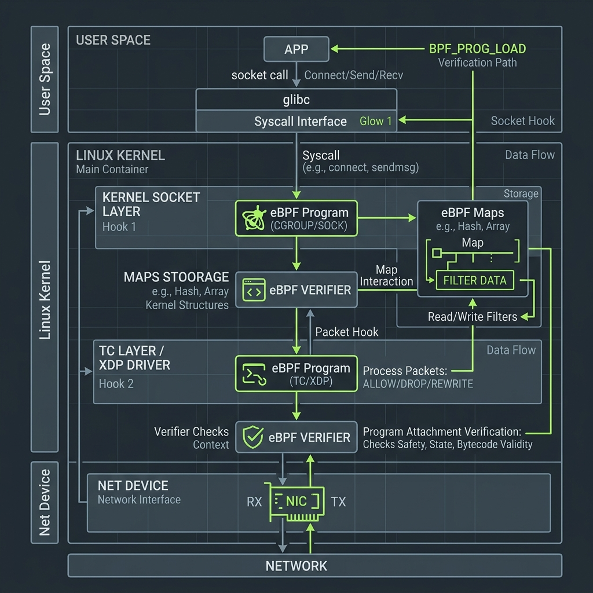

Série: Blindagem de Sistemas — Módulo 07
Defesa de Tese: Contenção de Danos e Soberania Digital

Nota do Desenvolvedor: O caso a seguir representa uma simulação prática de engenharia com base em ameaças e ocorrências reais do ecossistema corporativo.
1. O Incidente: A Paralisia em Cadeia de Sistemas Públicos Nacionais
Durante a histórica crise da vulnerabilidade Log4j (RCE), diversos portais públicos e sistemas bancários brasileiros travaram completamente seus serviços. O principal fator para a catástrofe não foi a falha no código em si, mas a total ausência de contenção arquitetural. Uma vez que o invasor executava o código malicioso de forma remota na API de logs, a aplicação herdava direitos irrestritos para acessar a rede interna do data center, instalar scripts mineradores de dados e ler chaves privadas.
As aplicações rodavam sem isolamento e sem monitoramento de chamadas de sistema ao nível de kernel. Quando a falha estourou, o contágio se espalhou de maneira imediata pelas redes locais dos servidores corporativos. Esse cenário provou a urgente necessidade de desenhar arquiteturas de defesa baseadas no princípio do privilégio mínimo e do privilégio zero por padrão.
"A gente não constrói um submarino como se fosse um salão de festas amplo. Se bater em um iceberg de dados, o submarino inteiro afunda. Você cria anteparas e portas estanques blindadas de ferro. Se a água entrar no Módulo 02, você sela a porta e o restante do submarino continua flutuando. Na engenharia, isso significa isolar código legado em microVMs e aplicar filtros de sistema com eBPF."
2. O Diagnóstico: Domínios de Contenção e Tecnologias de Isolamento

Prevenir o colapso catastrófico de sistemas complexos exige o isolamento das partes sensíveis através de camadas rígidas de controle no kernel do sistema operacional:
- eBPF (Extended Berkeley Packet Filter): Permite injetar programas seguros e leves diretamente no kernel do Linux para auditar e bloquear requisições de rede ou chamadas de arquivos por aplicações comprometidas, sem causar lentidão no processamento do servidor.
- MicroVMs (Isolamento por Hardware): Tecnologias como Firecracker executam cada processo inseguro (como interpretadores de documentos legados ou códigos antigos compilados em C) dentro de mini-máquinas virtuais que inicializam em milissegundos, limitando o acesso a discos rígidos e placas de rede físicas.
3. Mitigação: O Desenho da Tese de Soberania
Para estruturar a contenção e a defesa contra ataques automatizados de IA em larga escala, as decisões de arquitetura de longo prazo baseiam-se em:
- Sandboxing Estrito: Envelopar todo processamento de arquivos de terceiros em micro-máquinas virtuais sem comunicação de rede.
- Filtros eBPF Ativos: Configurar perfis de monitoramento que proíbem que APIs web tradicionais iniciem novos processos ou executem downloads arbitrários fora do planejado em tempo de execução.
"Sei que muito do que discutimos nestes sete capítulos soa puramente conceitual. Mas a verdade é que toda pós-graduação é, por definição, conceitual. O nosso objetivo aqui não foi te dar receitas prontas, mas sim estruturar a sua base teórica e criar as 'ilusões de aprendizado' necessárias para que você perca o medo do baixo nível. É essa fundação mental que te dará a segurança e a oportunidade de encarar a realidade caótica do chão de fábrica quando um sistema de produção falhar sob a sua responsabilidade. A partir de hoje, a fita crepe está com você. Parabéns pela formatura."
Revisão de Linha de Frente (Resumo do Aprendizado)
- Princípio de Isolamento: Não confie na perfeição do código de terceiros. Assuma que seu sistema será comprometido e blinde as fronteiras operacionais.
- eBPF e microVMs: As ferramentas modernas que garantem o privilégio mínimo para processos ativos diretamente na raiz do kernel.
- Soberania Digital: A capacidade corporativa e nacional de garantir a sobrevivência e integridade das infraestruturas de dados essenciais frente a ameaças globais.
Dicionário de Trincheira (Para Leigos e Executivos)
- Área de Execução Isolada (Sandbox): Um contêiner lógico seguro que confina a execução de um processo. Mesmo se a rotina for comprometida por pacotes maliciosos na rede, os danos não afetam o restante do sistema operacional host.
- Auditoria a Nível de Kernel (eBPF): Tecnologia que executa programas diretamente no núcleo do sistema operacional, permitindo registrar tráfego de rede e acesso a arquivos em tempo real sem impacto no desempenho dos servidores.
- Máquinas Virtuais Compactas (MicroVM): Ambientes de virtualização ultra-leves que isolam processos isolados com tempo de boot de milissegundos, reduzindo a superfície de exposição cibernética das aplicações ao mínimo necessário.
- Soberania Tecnológica: A autonomia de uma organização ou país em manter total resiliência sobre sua infraestrutura, eliminando dependências externas exclusivas que geram vulnerabilidade regulatória e estratégica.
- Chamada de Sistema (Syscall): A requisição direta que um aplicativo faz ao núcleo (Kernel) do sistema operacional para realizar operações protegidas de hardware, tais como leitura de arquivos em disco ou transmissão de dados pela placa de rede.
— Fim da Série Blindagem de Sistemas. Índice da série em: Chamada e Índice.